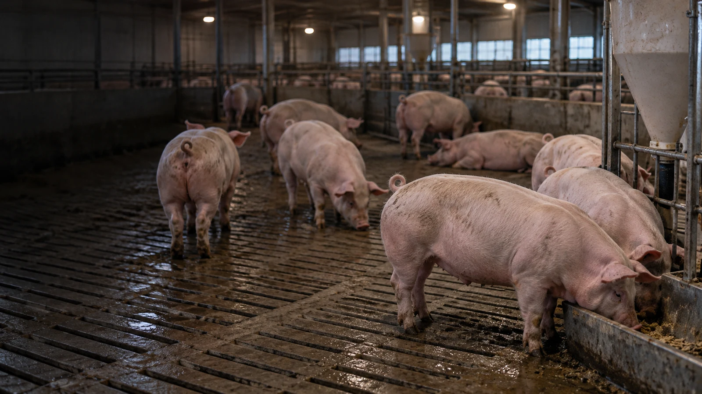

選一個經營痛點
母豬可看 PSY／斷奶數；育肥可看料肉比、日增重或出肉指標；水產可看成活率、規格分布與每公斤增重成本。一次先聚焦一至兩項。
活力得® 生物可利用硅源複合功能材料
聚焦繁殖、生長與育成的實際經營指標；把自家基線、預期增收與產品成本放進來，先算清楚再決定。
场效数据须来自可追溯的活力得®实际使用记录；没有原始资料时不展示成效数字。
填入你估算的每頭增收／節省、產品投入成本和本批頭數，即時計算損益兩平點與整批淨收益。金額輸入以 CNY 為基準。
估算公式：（每頭增收＋節省－每頭產品成本）×頭數。ROI＝每頭淨收益 ÷ 每頭產品成本。這是依你輸入資料的情境試算，不代表保證結果；試用前建議記錄同場基線、使用成本與出欄／繁殖數據。
下載空白場效 A/B 記錄表（CSV）｜表格只在你的裝置下載，不會上傳資料。
填入三項自家數據即可試算，數據不會上傳。
先選一個最影響毛利的指標，記下基線、使用成本與觀察週期；再用同一口徑看結果，避免只憑印象判斷。
母豬可看 PSY／斷奶數；育肥可看料肉比、日增重或出肉指標；水產可看成活率、規格分布與每公斤增重成本。一次先聚焦一至兩項。
記下物種、品種、日齡、日糧、添加量、頭數／尾數與起訖日期；比較時同步記錄天氣、管理、疾病與飼料變更等差異。
將指標差異換算為實際增收或節省，扣除產品、運輸與額外操作成本，再代入上方試算器看每頭與整批結果。
場效數據須來自可追溯的活力得®實際使用紀錄；沒有原始資料時不展示成效數字。正式公開個案前，應能交代物種與階段、對照方式、樣本數、使用條件、觀察期間、指標口徑及原始資料來源；未完成來源核對的數值列為待查，不當作保證值。
先對照繁殖、生長、育成指標，再進入對應頁面查看產品資訊與場域參考
 繁殖線
繁殖線
生長線 反芻線
反芻線 家禽線
家禽線 水產線
水產線 農業線
農業線 產品原理
產品原理 市場與供應
市場與供應